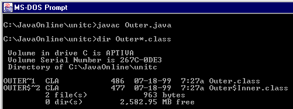
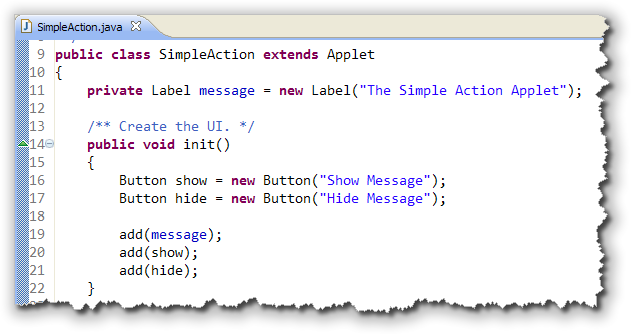
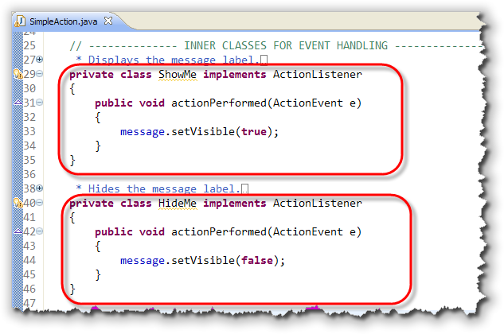
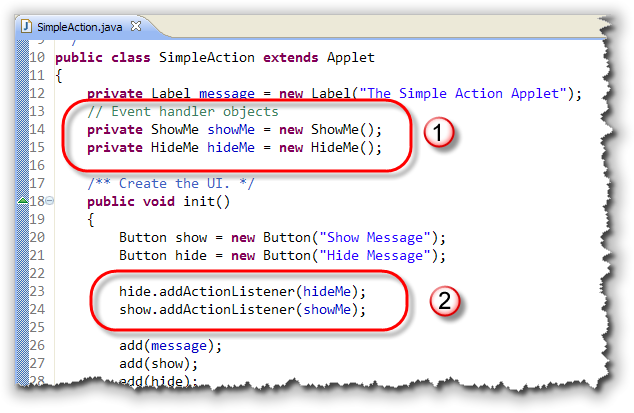
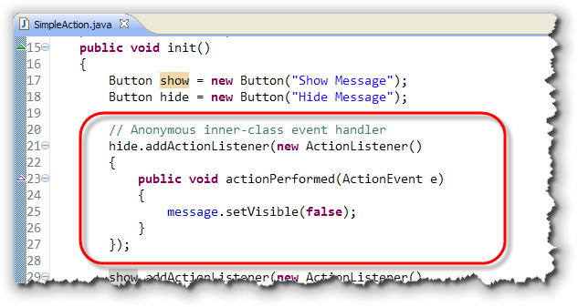
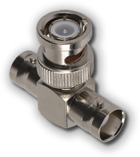
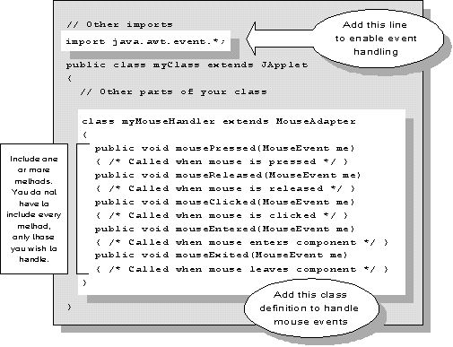
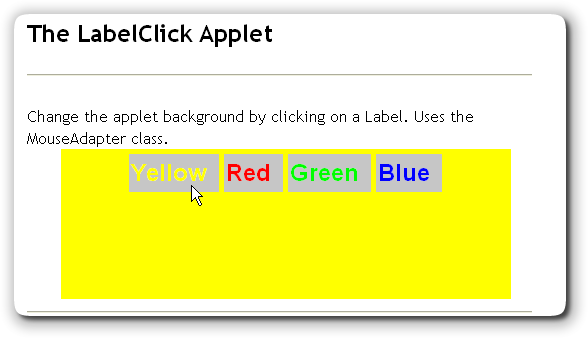
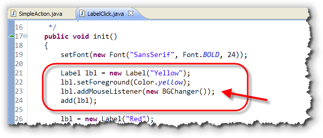
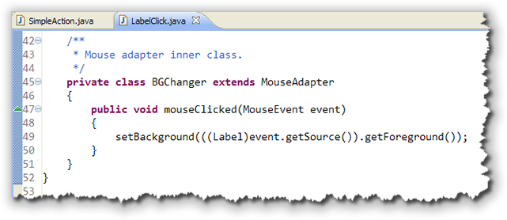

The examples you've seen so far all require your applet to implement an interface to handle the events you're interested in. In this section, you'll look at a different way of handling events: through the use of inner classes and event adapters.
Inner classes are nested classes that you define "inside" other classes. When you compile your program, Java combines the name of your outer (containing) class with the name of your inner class to create the actual "real" name of the class.
Here's an example:
public class Outer
{
private int a = 10;
class Inner
{
public void changeIt()
{
a = 5;
}
}
}
The outer class, here imaginatively named Outer
contains only a single private int field named
a, as well as the definition for an inner class
named Inner. There are two important things to
note about this example:
- The method
changeIt(), defined in the classInner, has access to theprivatedata fielda, while a subclass of theOuterclass would not. In this sense, inner classes act more like body parts than like relatives. - The example program creates no
Innerobject, it only contains a definition. To actually use the inner class you must also create anInnerobject.
When you compile this, as you can see here, you don't end up
with files named Outer.class and Inner.class.
Instead you have Outer.class and Outer$Inner.class:

The main reason for using inner classes is to respond to events. By creating a separate inner class for each event you want to handle, your code is more modular.Let's look at an example.
An Inner-class ActionListener
Let's create an applet that has two Buttons, and use
inner classes to hook up their events. This is an intentionally
simplified example. It also shows how to use AWT Button
and Label objects
in Java applets. Mostly the Button class works just
like the JButton class, but with fewer features.
Step 1: The Framework
The first step is to create the overall framework:
- Create an applet with a
Label(instance variable) and two localButtonobjects. - Put "A Simple Action Applet" in the
Label - Name your
Buttonsshowandhide. - Add all three items to the surface of your applet.
Your code should look like this:

Step 2: Inner Classes
Now, create the inner class definitions. Make sure that these go
inside the SimpleAction class definition,
but not inside one of the methods, such as init().
Here are the steps:
- Name your classes
ShowMeandHideMe. - Have each one
implement ActionListener - Each one should contain an
actionPerformed()method. - Make the
Labelvisible in one and invisible in the other.
Here's what your code should look like now:

Notice that the inner classes are marked asprivate (since they
have no meaning outside of their enclosing class) and that they are defined
entirely inside the SimpleAction class.
Step 3: Objects & Connections
At this point, you have two inner classes but you
don't have any ShowMe or HideMe
objects. Furthermore, since you don't have any handler
objects, your Buttons have nowhere to send their
event notifications.
Let's fix that like this:

- Add two fields,
hideMeandshowMe, using the appropriate constructor to initialize them. (Notice that these are the same names as the classes, except that they start with lowercase.) - Connect each
Buttonto the appropriate handler object, by sending it theaddActionListener()message.
When you run the program, clicking the hide button
forwards the event notification to the HideMe object,
calling it's actionPerformed() method. The second
button, show, forwards its notifications to the
ShowMe event-handler object.
Variations on a Class
There are two different variations on this basic inner-class
arrangement that are commonly used. It's important that you
recognize them, but remember that each of them does exactly the
same thing as the SimpleAction class you've just
seen; the inner classes are just arranged a little differently.
Variation 1: Anonymous Variables
This one is easy to understand. In SimpleAction,
the two variables showMe and hideMe
have only a single purpose: to create a ShowMe
object and a HideMe object to be passed to the
appropriate Button in addActionListener().
Since you really don't need these two fields for any other
purpose, you can eliminate the variables entirely, replacing
them with anonymous variables in the init()
method, like this:
hide.addActionListener(new HideMe());
show.addActionListener(new ShowMe());
Once you've done this, you can delete the two event-handler instance variables.
Variation 2: Anonymous Classes
This one is a little harder to grasp, because it's easy to get the syntax confused.
In the SimpleAction applet, the classes
ShowMe and HideMe are only used to
each create a single object—the object passed to
addActionListener(). Since you really don't need
the class definition in any other context, Java allows you to
create an anonymous class at the same place you
created the anonymous object in the last example:
when you call addActionListener().
To understand this syntax, think of the original class definition
for the HideMe class shown here, with the
identifying information stripped out:
class HideMe implements ActionListener
{
public void actionPerformed(ActionEvent ae)
{
message.setVisible(false);
}
}
Now, imagine that this definition is used to replace the
Hideme() constructor in the anonymous variables
variation like this:
hide.addActionListener(new HideMe/* insert here */());
The result is an anonymous class object that looks like this:

Note : Pay special attention to the last line. Note that it ends in a closing brace, followed by a closing parenthesis and a semicolon.Should You?
Should you use anonymous classes? Many programmers like them because using anonymous classes makes their code slightly shorter, plus they don't have to think up "dummy" class names. Others feel that it makes it harder to follow the outline of the original program.
You'll have to decide for yourself. There's no doubt, however, that anonymous classes, unless used in moderation, make a program harder to read and understand.
Event Adapters
In the last lesson, you saw how to implement the
MouseMotionListener interface, which you used to
respond to the mouseDragged() message in the
Dot applet.
Implementing the MouseMotionListener
interface required you to write two methods, but one
of those methods, (mouseMoved()), didn't do anything;
nevertheless, you still had to write the empty method; otherwise
your code would not compile.
For many of the other event-listener classes, the situation is even worse.
- For
KeyListeneryou have to write three methods - For
MouseListeneryou have to write five - For
WindowListeneryou have to write seven
And, in many cases, such as WindowListener, all of
those methods will be empty, "dummy" methods, which seems kind
of a waste.
Instead of writing all seven methods, why not simply create a superclass, that has dummy methods for all seven? Then, instead of writing out the same dummy methods over and over, you can just create a subclass, and override only the methods you want.
That's a really good idea. So good, in fact, that the designers of Java have already done this with the event adapter classes. An adapter class is simply a class which implements a specific event interface and then provides dummy methods for each of the required methods.
Exploring Adapters
Java provides seven different adapter classes—one for each of the event interfaces that contain multiple methods.
No adapter classes are provided for interfaces such
as ItemListener or ActionListener,
which contain only a single method, because there would be no
advantage to using the adapter class over the interface.

The seven adapter classes provided by Java include:
ComponentAdapterContainerAdapterFocusAdapterKeyAdapterMouseAdapterMouseMotionAdapterWindowAdapter
Using Adapters
To use an adapter class you follow these steps:
- Create an inner class that extends one of the existing adapter classes.
- Override the methods of interest in your inner class.
- Create an object of your inner class and send event notifications to the new object.
Here's what that looks like for the MouseAdapter
class:

A MouseAdapter Example
Let's look at a simple applet that uses MouseAdapter
to change the background of the applet. The program,
LabelClick.java, contains four Label objects,
captioned "Red", "Green", "Blue", and "Yellow", as shown here

The init() Method
The applet itself doesn't implement any interface. Instead, it
simply creates several Label objects inside the
init() method, and then registers each one by
calling addMouseListener(), passing an annonymous
BGChanger object as the argument:

The Inner Class
The BGChanger class is defined as an inner class
that extends MouseAdapter. Inside the class, only
the mouseClicked() method is overridden:

The method retrieves the foreground color from theLabel
that was clicked, and uses that to set the applet's background
color.
You can run the applet by clicking the link in this sentence.
Coming Up ...
In this lesson you learned how to create inner classes and how to use Java's event adapter classes to respond to events.
In the next lesson, we'll return to the topic of exceptions,
learning how to handle them with try-catch-finally.